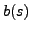

We develop a Stieltjes-Lanczos procedure for a symmetric, positive
definite parameterized matrix and a given
parameterized vector . Each element in and is assumed
to be a bounded and continuous
function of a set of parameters
.
The method computes a constant tridiagonal matrix whose
eigenvalues approximate the parameterized spectrum of
. We show how this can be interpreted as constructing a Gaussian
quadrature formula for a Riemann integral of the
form
, where  is an analytic function
and
denotes
integration over the parameter space.
We also apply this procedure to iteratively approximate the vector-valued
function that solves
; such problems commonly arise within discretizations of
partial differential equations with
stochastic inputs. Preliminary numerical experiments are provided which
validate the theory and suggest future
directions for research.
is an analytic function
and
denotes
integration over the parameter space.
We also apply this procedure to iteratively approximate the vector-valued
function that solves
; such problems commonly arise within discretizations of
partial differential equations with
stochastic inputs. Preliminary numerical experiments are provided which
validate the theory and suggest future
directions for research.